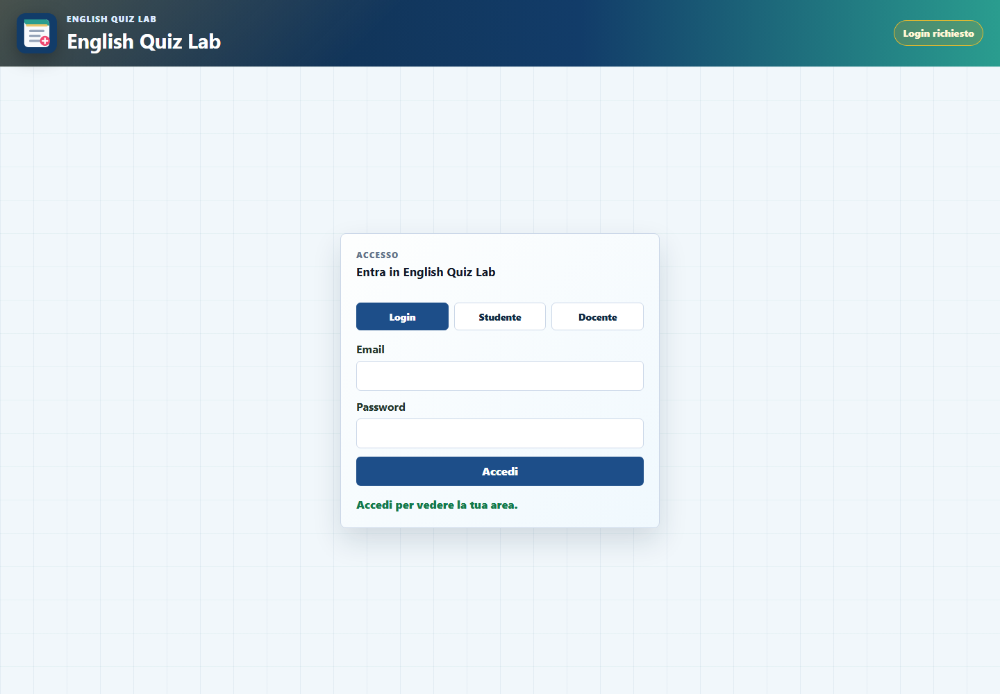

Usare l'AI senza rinunciare al controllo
Docenti e studenti avevano bisogno di flussi semplici ma distinti. L'obiettivo era generare quiz da fonti diverse, permetterne la revisione prima della pubblicazione e proteggere risposte, ruoli e risultati.
Una web app per creare, revisionare, pubblicare e svolgere quiz di inglese generati con AI, mantenendo controllo umano e protezione dei dati.

Docenti e studenti avevano bisogno di flussi semplici ma distinti. L'obiettivo era generare quiz da fonti diverse, permetterne la revisione prima della pubblicazione e proteggere risposte, ruoli e risultati.
PDF, immagini, audio e video possono supportare la generazione; audio e video conservano riferimenti temporali verificabili.
Il docente revisiona le domande prima della pubblicazione, evitando che l'output AI venga mostrato senza verifica.
Supabase gestisce autenticazione, persistenza e policy RLS per separare permessi e contenuti.
JSON, operazioni sensibili e calcolo del punteggio vengono controllati sul server prima di raggiungere il frontend.
La sfida principale è stata gestire risposte AI non sempre uniformi. Ho introdotto uno schema strutturato, validazioni prima del rendering e passaggi di revisione. Per l'interfaccia ho separato le azioni per ruolo e mantenuto feedback chiari durante i flussi più lunghi.
Il progetto mi ha permesso di consolidare integrazione AI, modellazione dei dati, sicurezza e progettazione di percorsi distinti. I prossimi sviluppi riguardano accessibilità, qualità dei quiz, strumenti di revisione e gestione più chiara degli stati vuoti e di errore.